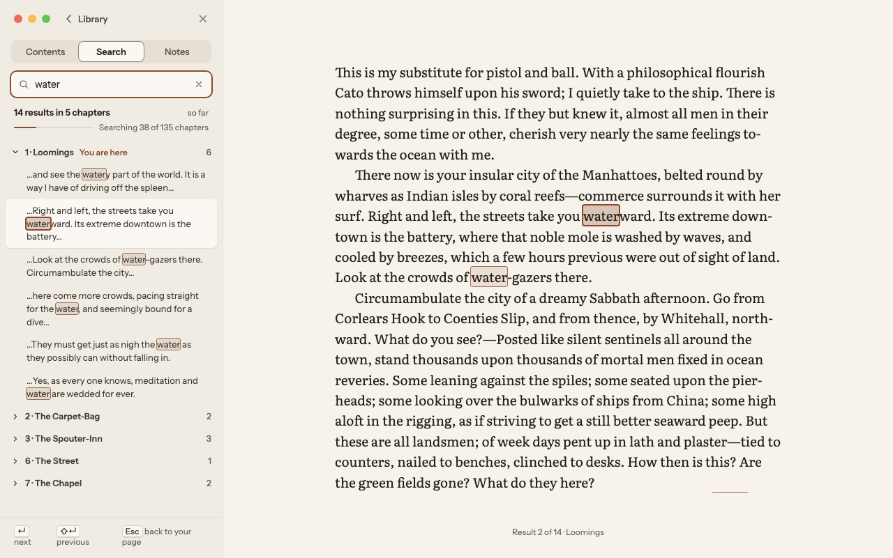
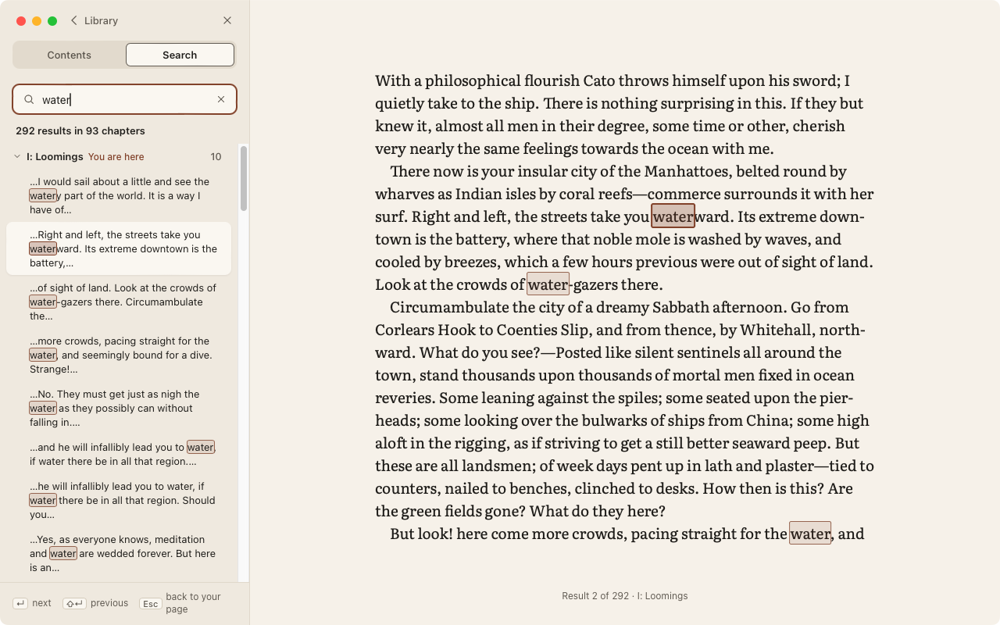

Phase 4 review: Search
The Screen 05 mock (left) against the app in the same state: Moby-Dick, “water”, the second result on the page, 1280 × 800, Paper, captured from the app's own window on the reference Mac (WebKit 19618). Approving makes the capture the Phase 4 baseline.
Screen 05 — Navigator, Search




- Matches: the tabs under the header (no book block on this tab), the field with its accent ring and clear button, the count line, chapter groups with counts and “You are here”, the current chapter open, snippets with the match marked, the active result raised, marks in the page (soft tint and 1 px outline; the active one stronger with a 2 px accent outline), the ↵ / ⇧↵ / Esc footer and “Result 2 of N · chapter” in the location line.
- expectedThe counts are the book's real ones (292 results in 93 chapters); the mock shows 14 in 5, mid-search. While a search is still running the line adds “so far” and a “Searching N of M chapters” bar, as the mock draws.
- expectedChapter labels come from the book's table of contents (“I: Loomings”).
- later phaseThe Notes tab joins in Phase 5.